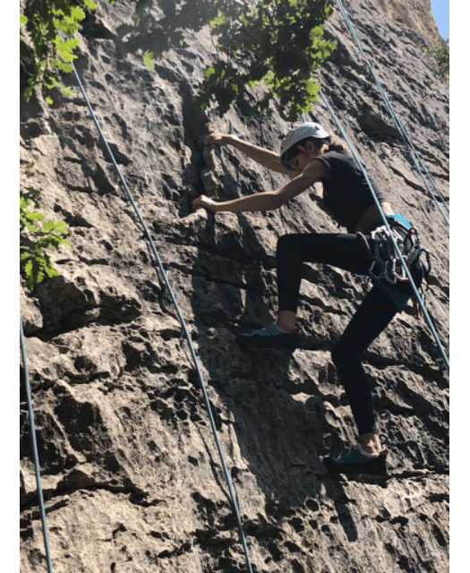
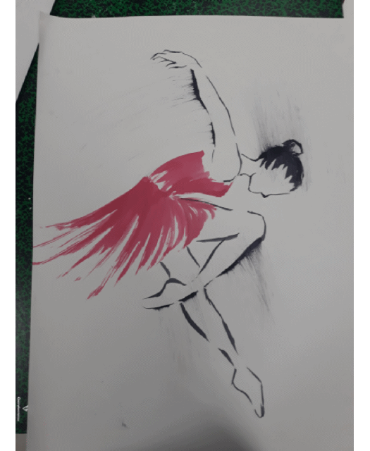
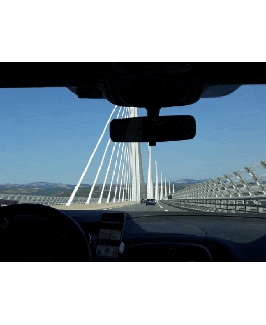

L'escalade : je pratique l'escalade depuis maintenant trois ans et c'est un sport que j'aime énormément. Je grimpe en
interieur comme en extérieur. Mais je préfère de loin les paysages alpins aux salles d'escalades.

Le dessin : j'ai commencer à dessiner depuis toute petite et depuis je ne me suis jamais arrêtée. J'aime beaucoup l'art en
général et je suis quelqu'un de très manuel. Je fais d'ailleur partie de l'option art plastique au sein de mon
lycée. Je crois que ce que j'aime le plus dans le dessin c'est de me voir progresser.

Voyager : j'aime énormément voyager. Ca à un peu ce côté aventure. Découvrir de nouvelles cultures, de nouveaux paysages.
Voyager nous apporte tellement de choses en si peu de temps. C'est génial !
